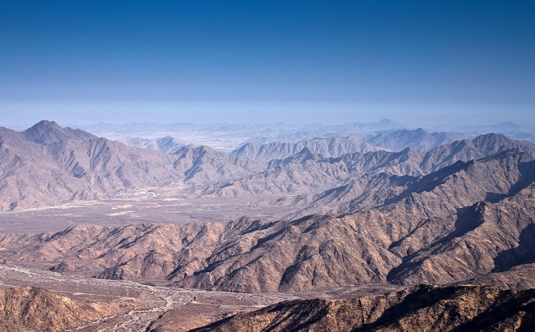
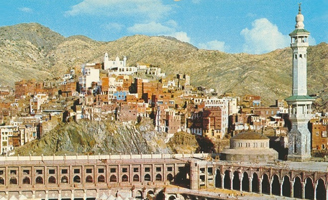
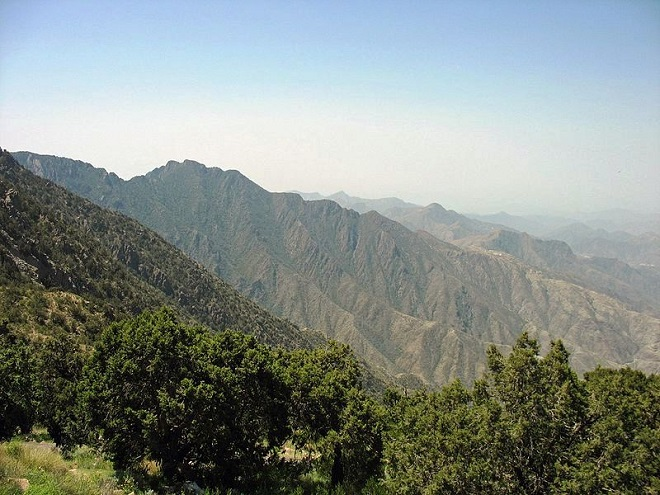
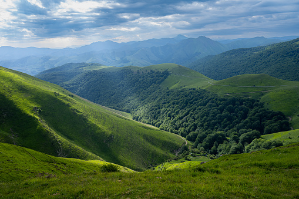
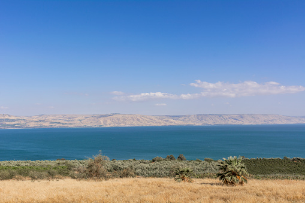
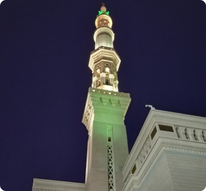
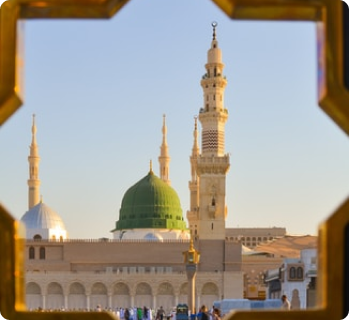

Yuklanmoqda...
MAKKAH TRAVEL - UMRA ZIYORATI
Uzoq yillik tajriba, doimiy hursand mijozlar, sifatli xizmatlar...
Makkadagi ziyoratlar

NUR TOG'I (HIRO G'ORI)




Tog‘larning deyarli barchasi Saudiya Arabistonida bo‘lib, ularning qadimiy nomi muhim tarixiy voqealarga bog‘liq. Shu boisdan aksari muqaddas sanaladi va butun dunyo musulmonlari ushbu tog‘larga ziyoratga keladi. Sofa va Marva Makkadagi ikki muqaddas tepalik. Ularga borish haj va umrani bajarish amallaridan biri hisoblanadi. Qur’oni Karimda: إِنَّ الصَّفَا وَالْمَرْوَةَ مِن شَعَآئِرِ اللّهِ فَمَنْ حَجَّ الْبَيْتَ أَوِ اعْتَمَرَ فَلاَ جُنَاحَ عَلَيْهِ أَن يَطَّوَّفَ بِهِمَا وَمَن تَطَوَّعَ خَيْراً فَإِنَّ اللّهَ شَاكِرٌ عَلِيمٌ “Albatta, Safo va Marva Alloh(dini)ning belgilaridandir. Kim Baytullohni haj yoki umra qilsa, ikkovlari o‘rtasida sa’yi qilish gunoh emas. Kim yaxshilikni xolisona qilsa, bas, albatta, Alloh shukr qiluvchi va biluvchidir. (Oyatda Alloh taolo: “Kim Baytullohni haj yoki umra qilsa, ikkovlari o‘rtasida sa’yi qilish gunoh emas”, deydi. Ushbu oyat hujjat bo‘lib shariatimizda Safo va Marva tepaliklari o‘rtasida sa’yi qilish vojib amal, deb belgilangan. Oyatda sa’yi qilish vojib bo‘ladi, deyish o‘rniga, “Sa’yi qilish gunoh bo‘lmaydi”, deyilishining boisi shuki, ikkala tepalikda but borligi uchun, sa’yi qilish mushriklarning ishi, gunoh bo‘ladi, deb o‘ylab musulmonlar sa’yi qilmay qo‘ygan edilar. Shuning uchun Alloh taolo gunoh bo‘lmaydi, sa’yi qilinglar, demoqda.)” (Baqara surasi, 158 oyat).



Alal Badr (Hallat al-Badr) ,
Harratul-Uvairidning lava maydonida joylashgan. Ba'zi tadqiqotchilar va tahlilchilar (masalan, I. Velikovskiy va Sigmund Freyd) bu tog 'Sinay vahiyining joyidir. Ular Chiqish vaqtida vulqon faol bo'lishi mumkinligidan kelib chiqdilar.

AROFAT TOG'I






Harratul-Uvairidning lava maydonida joylashgan. Ba'zi tadqiqotchilar va tahlilchilar (masalan, I. Velikovskiy va Sigmund Freyd) bu tog 'Sinay vahiyining joyidir. Ular Chiqish vaqtida vulqon faol bo'lishi mumkinligidan kelib chiqdilar.

MUZDALIFA


Harratul-Uvairidning lava maydonida joylashgan. Ba'zi tadqiqotchilar va tahlilchilar (masalan, I. Velikovskiy va Sigmund Freyd) bu tog 'Sinay vahiyining joyidir. Ular Chiqish vaqtida vulqon faol bo'lishi mumkinligidan kelib chiqdilar.

MINO


Umra tarixi milodiy 629-yilda Payg‘ambarimiz Muhammad (s.a.v.) o‘zlariga 2000 nafar izdoshlari bilan birga birinchi marta umra qilganlaridan boshlanadi. Birinchi amalga oshirilgan haj ziyorati dindor musulmonlarning ko‘p kurashlari, muzokaralari va hatto qurbonliklari natijasi bo‘lgan. “Kichik ziyorat” deb ham ataladigan umra Saudiya Arabistonining Hijozi mintaqasida joylashgan musulmonlar uchun eng muqaddas shahar hisoblangan Makkaga Islomiy ziyoratdir. Bu musulmonlar orasida diniy ahamiyatga ega boʻlgan ikkinchi ziyorat boʻlib, yilning istalgan vaqtida, haj kunlaridan tashqari amalga oshirilishi mumkin. Alloh taologa ibodat qilishning eng hurmatli amallaridan biri sanalgan umra Ka’bani ziyorat qilish va ba’zi muqaddas marosimlarni bajarishni o‘z ichiga oladi..
Madinadagi ziyoratlar

QUBO MASJIDI


Madina shahridagi ziyorat qilinadigan o'rinlardan biri “Kubo” masjididir. “Kubo” masjidi Islomda birinchilanadi masjid xisob. Paygambarimiz sollallohu alayhi vasallam Madinaga ko'chib o'tayotgan paytlarida Madina yo'lida kubo deb nomlangan joyga yetib, o'sha bir necha kun turganlar. U yerda birinchi bo'lib “Kubo” masjidiga asos solganlar va ilk o'sha masjidda zhamoat namozini o'qiganlar

QIBLATAYN MASJIDI


Madina shahridagi ziyorat qilinadigan o'rinlardan biri “Kubo” masjididir. “Kubo” masjidi Islomda birinchilanadi masjid xisob. Paygambarimiz sollallohu alayhi vasallam Madinaga ko'chib o'tayotgan paytlarida Madina yo'lida kubo deb nomlangan joyga yetib, o'sha bir necha kun turganlar. U yerda birinchi bo'lib “Kubo” masjidiga asos solganlar va ilk o'sha masjidda zhamoat namozini o'qiganlar

UHUD TOG'I


Uhudgi Madinaning shimoliy tarafida joyi muborak bir tog'dir. Tog'lanish tezligi 7 km, o'rganish 2-3 km, issiqlik esa 350 metrga yaqin. Tog Madinai Munavvaradan taxminan 4-5 kilometr uzoqlikda joylashgan. Uhud tog'ida bir necha g'or va daralar mavjud bo'lib, ba'zi g'orlarning bir yarim metrni, ba'zilar esa o'n metrni tashkil etadi.

HURMO BOG'I


Pishgan xurmo mevalari naviga qarab sariq-qizildan to‘q jigarranggacha farq qiladi. Mazkur mevalar ko‘pincha quruq meva sifatida sotiladi. Xurmolarning quritilganligini ularning tashqi ko‘rinishiga qarab aniqlash mumkin. Po‘sti qanchalik silliq bo‘lsa, meva shunchalik yangi bo‘ladi.

QUR'ON BOSMAXONASI


Kuroni Karim 22 yil 2 oy 22 kun mobainida Rasulullohga (solllohu alayhi vasallam) oyatlar holida nozil bulgan. Oyat Kuroni Karim harflaridan bir fosila bilan jamlagan ilohy kalomdir. Oyati karimalar orasida bir sahifaga uzun oyatlar bo'lishi bilan birga o'rtacha uzunlikda va bitta so'zdan iborat bo'lganlari ham bor. Biror vazn yoki sheriy ruhga ega emas. Kuroni Karimning o'z ruhi bor va u ilohiy vahining yuksak hikmatlarini jamlagan ilohiy kalomdir.
Paketlar
20 kunlik paketlar-2080$ECONOM

Madinada 7 kun
Makkada 13 kun
Mehmonxonalarni 3*
2 mahal ovqatlanish
4 kishilik honalar
SILVER

Madinada 7 kun
Makkada 13 kun
Mehmonxonalarni 4*
2 mahal ovqatlanish
3-4 kishilik honalar
GOLD

Madinada 7 kun
Makkada 13 kun
Mehmonxonalarni 5*
3 mahal ovqatlanish
2 kishilik honalar
15 kunlik paketlar-1850$
ECONOM

Madinada 5 kun
Makkada 10 kun
Mehmonxonalarni 3*
2 mahal ovqatlanish
4 kishilik honalar
SILVER

Madinada 5 kun
Makkada 15 kun
Mehmonxonalarni 4*
2 mahal ovqatlanish
3-4 kishilik honalar
GOLD

Madinada 5 kun
Makkada 10 kun
Mehmonxonalarni 5*
3 mahal ovqatlanish
2 kishilik honalar
Bizning xizmatlar
UMRA VISA

Viza ko'magi
- 2 dona rangli fotosurat
- Oq fonda 4x6 (ayollar ro'mol o'ragan holda)
- -solomatligi;
- -tolov qobiliyati;
- ziyoratga ma'naviy tayyorgarligi;
Shuningdek, ziyoratchilar quyidegi talablarga javob berishlari kerak:

4-5 YULDIZLI MEHMONXONA


O'rta Makkadagi Haj va Umra Ekspressidagi eng yaxshi mehmonxona | tomonidan Hajj Umra Express | O'rta.

ELLIKBOSHI


Malakali ellkboshi xizmati. Ziyoratchilar Umra safari davomida tajribali ellikboshi hamda gid ekskursavod xizmatlaridan foydalanadilar. Ziyorat davomida ziyoratchilar Madina shahrida: Makka shahrida: Jabbal al-Savr tog'i, Hiro go'ri Arofat tog'i, Mino hamda Muzdalifa, Jamorat(shaytonga tosh otadigon joy) hamda Jin masjidi bo'ylab ziyorat qilishadi

AVIA CHIPTA


Malakali ellkboshi xizmati. Ziyoratchilar Umra safari davomida tajribali ellikboshi hamda gid ekskursavod xizmatlaridan foydalanadilar. Ziyorat davomida ziyoratchilar Madina shahrida: Makka shahrida: Jabbal al-Savr tog'i, Hiro go'ri Arofat tog'i, Mino hamda Muzdalifa, Jamorat(shaytonga tosh otadigon joy) hamda Jin masjidi bo'ylab ziyorat qilishadi
TRANSFER XIZMATI


Ziyoratchilar Madina hamda Makka shaharlarida kutib olinb mehmonhonalarga joylashtiriladi hamda 24 soat davomida zamonaviy LUX avtobus xizmatlaridan foydalanishlari mumkun bo'ladi. Umra safari nihoyasiga yetganda so'ng barcha ziyoratchilar aeraportga kuzatilinib kerakli bo'lgan xujjatlarni rasmiylashtirish hamda yuklarni tegishli tartibda registratsiyadan o'tkazishga ko'mak berilib samalyot saloniga kuzatib koyiladi.

2-MAHAL TAOM


Shved uslubidagi ertalabgi nonushtalar hamda O'zbek milliy taomlari. Ziyoratchilar safar davomida mehmonxona restoranida shved uslubida ertalabgi nonushtalarni tanovul qilishlari hamda O'zbek milliy taomlaridan kechkurungi ovqatlanishda tanovul qilishlari mumkin bo'ladi.
Manzilimiz
UZB +998906235577
UZB +998952015577
UZB +998906235577
Manzilimiz: Andijon shaxar , Mustaqilik shox ko'chasi 4-uy
Mo'ljal: Devonaboy Masjididan 50 metr pastroqda
Aloqa: